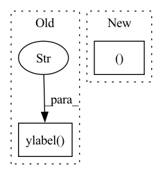

Pattern ID :35066
Before Change
Plot training and validation results over the number of epochs.
plt.plot(history.history["loss"], label="Training Set")
plt.plot(history.history["val_loss"], label="Validation Data)")
plt.ylabel("Categorical Cross Entropy Loss" )
plt.xlabel("Num Epochs")
plt.title("Performance on Training vs. Validation")
plt.legend(loc="upper left")
After Change
if not os.path.exists(plot_dir):
os.mkdir(plot_dir)
fig, (ax1, ax2 ) = plt.subplots(2, 1)
// Plot Loss
ax1.plot(history.history["loss"], label="Training Set")
ax1.plot(history.history["val_loss"], label="Validation Data)")In pattern: SUPERPATTERN
Frequency: 4
Non-data size: 2
Instances Fragment ID: 100126401
Project Name: stan-hua/cytoimagenet
Commit Name: 1ab297e870800b585b527efea61b1dad69bc8ee4
Time: 2021-08-03
Author: stanley.hua@mail.utoronto.ca
File Name: scripts/model_pretraining.py
M Class Name: AnonimousClass
N Class Name: AnonimousClass
M Method Name: plot_loss(3)
N Method Name: plot_loss(2)
M Parent Class:
N Parent Class:
M File Name: scripts/model_pretraining.py
N File Name: scripts/model_pretraining.py
M Start Line: 93
M End Line: 105
N Start Line: 128
N End Line: 158
Before Change
plt.close("all")
im = plt.imshow(encoder_variable_selection_weights[example_index], aspect="auto")
plt.ylabel("lookback steps" )
plt.xticks(np.arange(model.ins), model.in_cols, rotation=90)
plt.colorbar(im, orientation="vertical", pad=0.05)
plt.title(example_index)
plt.savefig(os.path.join(maybe_create_path(model.path), f"{data_name}_enc_var_selec_{example_index}.png"),After Change
plt.close("all")
axis, im = imshow(encoder_variable_selection_weights[example_index],
aspect="auto", ylabel="lookback steps", title=example_index)
plt.xticks(np.arange(model.ins), model.in_cols, rotation=90) Fragment ID: 100126400
Project Name: atrcheema/dl4seq
Commit Name: 1930cfdbeef043503785c6635731b07dd9ca3a2d
Time: 2021-11-19
Author: sara.rwpk@gmail.com
File Name: ai4water/postprocessing/interpret/_interpret.py
M Class Name: Interpret
N Class Name: Interpret
M Method Name: interpret_example_tft(5)
N Method Name: interpret_example_tft(5)
M Parent Class: Plot
N Parent Class: Plot
M File Name: ai4water/postprocessing/interpret/_interpret.py
N File Name: ai4water/postprocessing/interpret/_interpret.py
M Start Line: 303
M End Line: 312
N Start Line: 304
N End Line: 313
Before Change
plt.figure(figsize=(8, 4))
plt.imshow(att.detach().numpy(), interpolation="nearest", aspect="auto", origin="lower")
plt.xlabel("Inputs")
plt.ylabel("Outputs" )
plt.xticks(range(len(att[0])), labels=phones)
plt.tight_layout()
if not os.path.exists(os.path.join(att_dir, "attention_plots")):
os.makedirs(os.path.join(att_dir, "attention_plots"))After Change
bin_att = binarize_attention_parallel(att.unsqueeze(0).unsqueeze(1),
in_lens=torch.LongTensor([len(text)]),
out_lens=torch.LongTensor([len(att)])).squeeze(0).squeeze(0)
fig, ax = plt.subplots(nrows=2, ncols=1, figsize=(8, 9))
ax[0].imshow(att.detach().numpy(), interpolation="nearest", aspect="auto", origin="lower")
ax[1].imshow(bin_att.detach().numpy(), interpolation="nearest", aspect="auto", origin="lower")
ax[1].set_xlabel("Inputs") Fragment ID: 100126398
Project Name: digitalphonetics/ims-toucan
Commit Name: f4b6225ffb1360b67aca1559ae7fb18b17788dbf
Time: 2021-09-26
Author: florian.lux@ims.uni-stuttgart.de
File Name: TrainingInterfaces/Text_to_Spectrogram/Tacotron2/tacotron2_train_loop.py
M Class Name: AnonimousClass
N Class Name: AnonimousClass
M Method Name: plot_attention(7)
N Method Name: plot_attention(7)
M Parent Class:
N Parent Class:
M File Name: TrainingInterfaces/Text_to_Spectrogram/Tacotron2/tacotron2_train_loop.py
N File Name: TrainingInterfaces/Text_to_Spectrogram/Tacotron2/tacotron2_train_loop.py
M Start Line: 30
M End Line: 39
N Start Line: 29
N End Line: 53